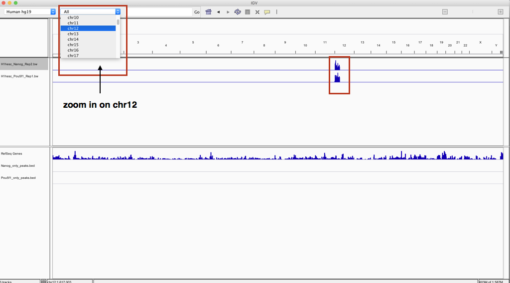

Qualitative assessment using IGV
Approximate time: 25 minutes
Learning Objectives
- Use IGV to visualize BigWig, BED and data from ENCODE
Qualitative assessment using IGV
Another method for assessing the quality of your alignment is to visualize the alignment using a genome browser. For this workshop we will be using the Integrative Genomics Viewer (IGV) from the Broad Institute. You should already have this downloaded on your laptop. IGV is an interactive tool which allows exploration of large, integrated genomic datasets. It supports a wide variety of data types, including array-based and next-generation sequence data, and genomic annotations, which facilitates invaluable comparisons.
Transfer files
In order to visualize our ChIP-seq enrichment we will first need to move over the bigWig files. We previously used FileZilla to transfer files from O2 to your laptop and so we will do the same for these files.
NOTE: There is another way to do so using the command line interface. Similar to the
cpcommand to copy there is a command that allows you to securely copy files between computers. The command is calledscpand allows files to be copied to, from, or between different hosts. It uses ssh for data transfer and provides the same authentication and same level of security as ssh. The first argument is the location on the remote server and the second argument is the destination on your local machine.
$ scp username@transfer.rc.hms.harvard.edu:/path/to/file_on_O2 Path/to/directory/local_machine
Open up FileZilla and connect to the transfer node on O2. Navigate to the correct directory on the cluster panel and copy over the following files:
- Nanog-Rep2:
~/chipseq/results/visualization/bigWig/H1hesc_Nanog_Rep2.bw - Pou5f1-Rep1:
~/chipseq/results/visualization/bigWig/H1hesc_Pou5f1_Rep1.bw - Nanog-only BED:
~/chipseq/results/bedtools/Nanog_only_peaks.bed - Pou5f1-only BED:
~/chipseq/results/bedtools/Pou5f1_only_peaks.bed
NOTE: We are copying over only a single sample bigWig from each group. Since we observed that in each case there was a stronger replicate (high read density) that is what we used to make our selection.
Start IGV You should have this previously installed on your laptop.
- Load the Human genome (hg19) into IGV using the dropdown menu at the top left of your screen. Note: there is also an option to "Load Genomes from File..." under the "Genomes" pull-down menu - this is useful when working with non-model organisms
- Load the bigWig files and BED files using the "Load from File..." option under the "File" pull-down menu.
Your IGV interface should now look something like the screenshot below. By default, you will be in a zoomed out view. You will notice that for both bigWig tracks there appears to be a dense blue chunk at the beginning of chromosome 12, which makes sense considering the subsetted toy dataset we are working with. Use the pulldown menu to zoom into chromosome 12.

Before we start looking at specific genes you will want to Autoscale each track.
- Right click on the left-hand side panel. You should see many options available to you. If "Autoscale" is not checked go ahead and do this. You can do the same for both bigWig tracks.
The interaction between Pou5f1, and Nanog is supported by immunoprecipitation, functional analysis, and co-localization of binding sites, and so it is not surprising that they share the same target genes. While our BED files congtain peaks that are non-overlapping, the target genes that harbor these peaks can still be overlapping.
- For example take a look at Sox5 (use the search box to zoom into the gene). How many peaks are associated with this gene for Nanog? For Pou5f1?
- How convincing is the difference in enrichment?
-
For the Erc1 gene, there is only one peak associated with this gene. Which factor binds here? Is the differential enrichment obvious?
-
Finally, we are going to visually compare our data to the output from the full dataset from ENCODE, by loading that data from the IGV server.
This lesson has been developed by members of the teaching team at the Harvard Chan Bioinformatics Core (HBC). These are open access materials distributed under the terms of the Creative Commons Attribution license (CC BY 4.0), which permits unrestricted use, distribution, and reproduction in any medium, provided the original author and source are credited.